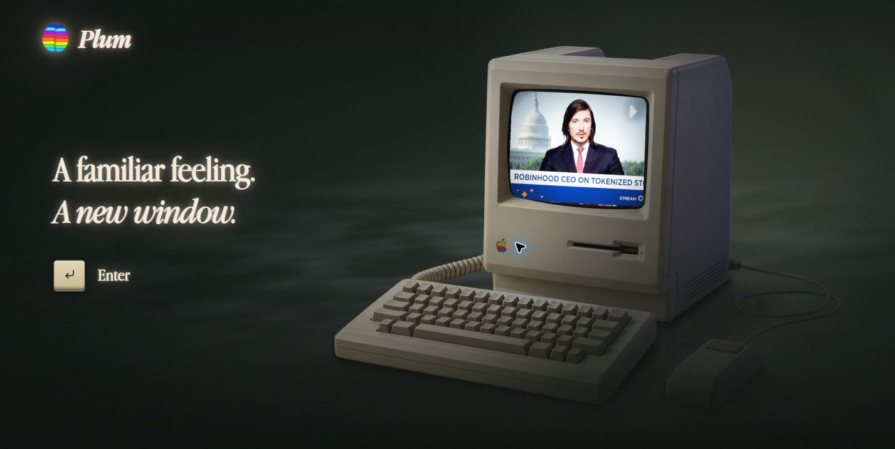
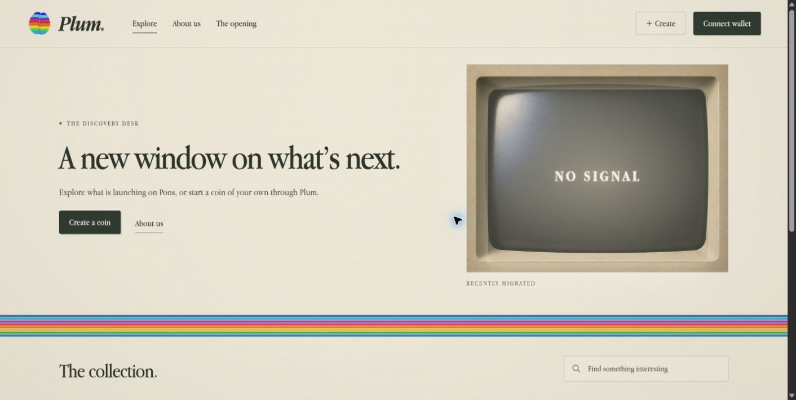
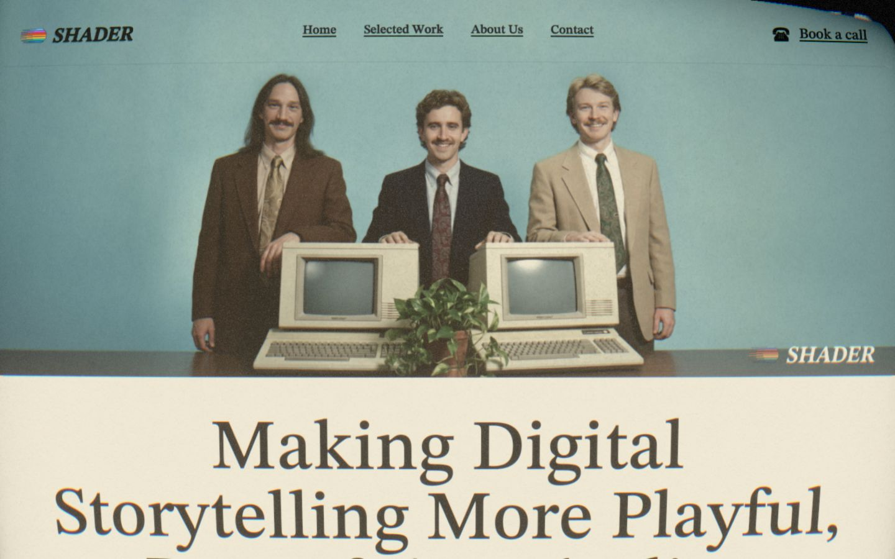
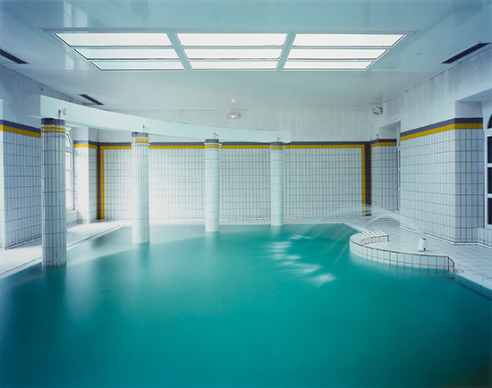
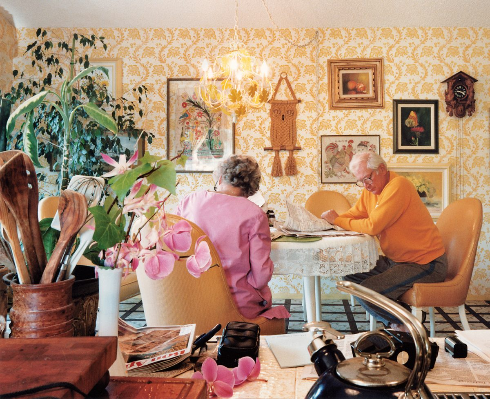
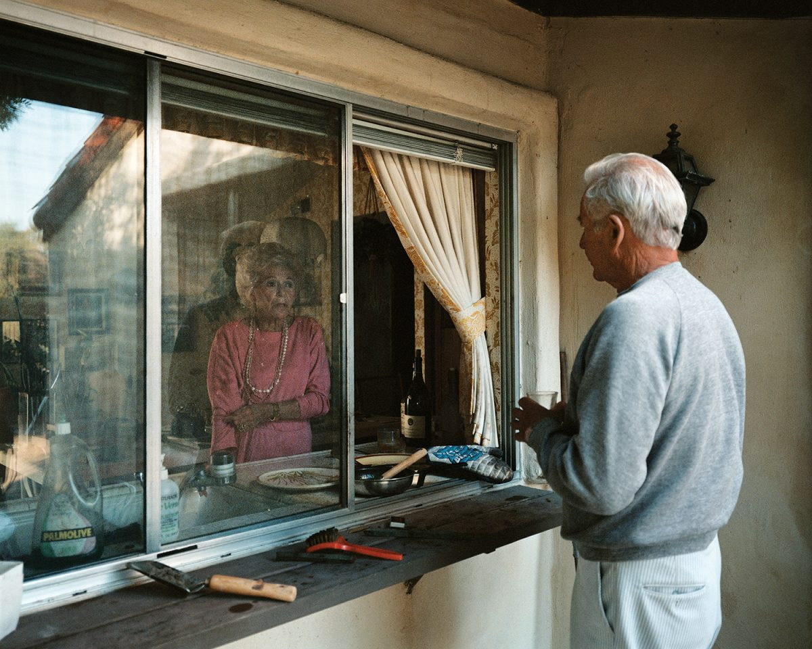
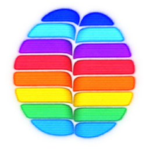
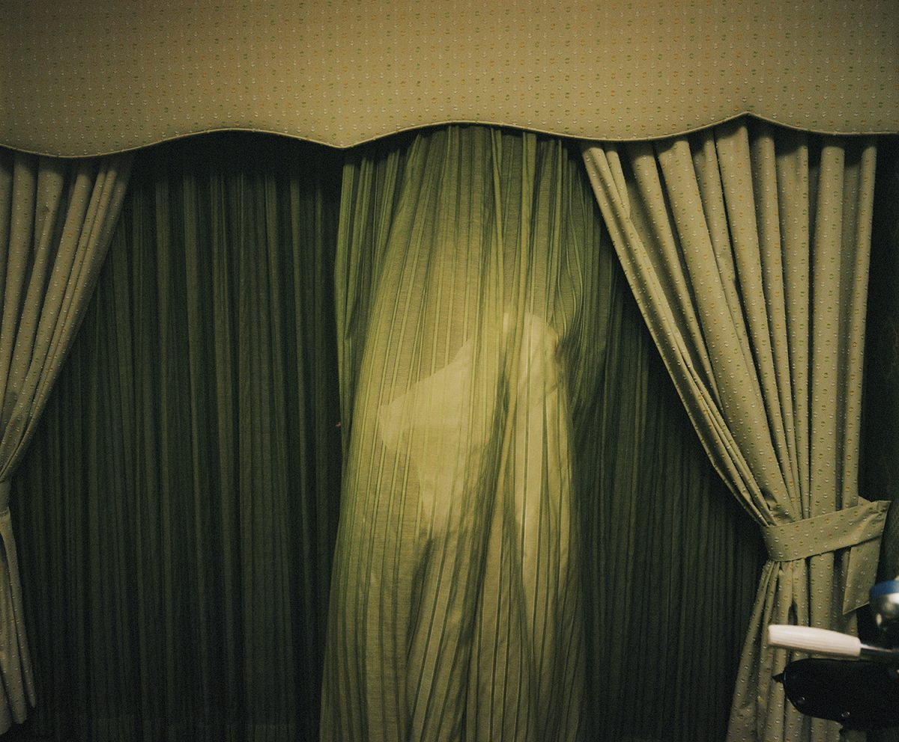

Plum / Film references / 07 September 2026
A familiar feeling.
A strange little film about the world Plum connects.
Late-night television in 1994, caught between channels.

01 / Brand atmosphere
The opening
Forest-green darkness, luminous ivory, haze and soft highlights.
Current Plum site · local screenshot
02 / Brand materials
The paper interior
Cream paper, fine texture, Garamond and a restrained rainbow.
Current Plum site · local screenshot
03 / Optical treatment
The faded brochure
Soft blue, tobacco brown, grain and an oddly familiar corporate portrait.
Shader · live About screenshot
04 / Empty shared space
Someone has just left
Quiet institutional light, hazy water and the sound of a room continuing.
Lynne Cohen · Spa · 1999 · NGC
05 / Ordinary domestic life
The world carries on
Warm clutter, printed paper, foreground layers and an unremarkable day.
Larry Sultan · Reading at the Kitchen Table · 1988
06 / Human connection
Across the window
A small exchange, worn surfaces and reflections. Nothing needs explaining.
Larry Sultan · Conversation Through Kitchen Window · 1986
07 / Exact end-card asset
Plum.
The supplied mark, then the name. Finally: a familiar feeling.
Original transparent PNG · unchanged
08 / Optional · Dreamlike unease
A half-remembered image
A figure behind a sheer curtain. Gentle ambiguity, stillness and muted green.
Larry Sultan · Mom Caught in Curtain · 1991